Back to Projects

SQL: Fundamental Exploratory Data Analysis
A handful of commands answers most of what a business asks. Each one here ends in a decision.
A handful of commands answers most of what a business asks. Each one here ends in a decision.
A fifth of SQL carries most of the work, and the same short list keeps coming up. Here it is.
The list is short for a reason. SQL rests on a small, closed set of operations, and business questions repeat: how much, of what kind, compared to what, which are the extremes. The hard part was never the syntax. It is knowing what the answer means.
The warehouse is the teaching data set from Data With Baraa, written for SQL Server. I rebuilt the schema and rewrote every query for PostgreSQL 17. It is a bicycle retailer in a star schema: 60,398 order lines, 18,484 customers, 295 products, from 2010 to 2014.
I take one of the most common applications in data analysis, an Exploratory Data Analysis, and follow its usual order:
It ends with a shorter list of questions worth asking, and a clear boundary around what this data can support. The six sections below work through that order.
SELECT / FROMWHEREDISTINCTCOUNTORDER BY
Every total downstream depends on one thing: what a single row of the fact table represents. Get the grain wrong and every number after it is wrong, so the structure gets read before anything is added up.
What is in the fact table
SELECT DISTINCT column_name, data_type
FROM information_schema.columns
WHERE table_schema = 'gold' AND table_name = 'fact_sales'
ORDER BY column_name;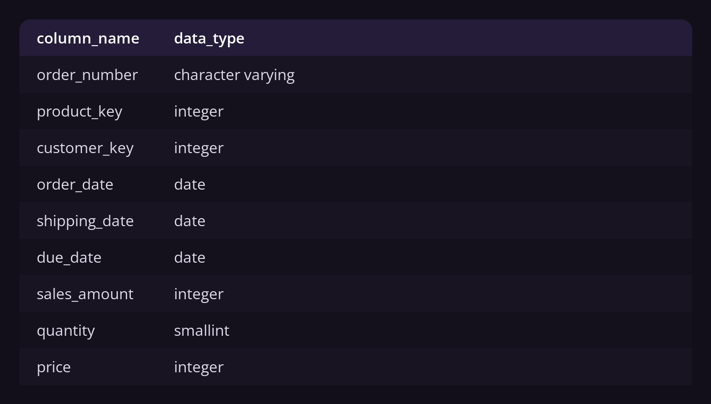
What does one row represent?
SELECT 'Rows in fact_sales' AS measure, COUNT(*) AS value FROM gold.fact_sales
UNION ALL SELECT 'Distinct order numbers', COUNT(DISTINCT order_number) FROM gold.fact_sales
UNION ALL SELECT 'Distinct customers', COUNT(DISTINCT customer_key) FROM gold.fact_sales
UNION ALL SELECT 'Distinct products', COUNT(DISTINCT product_key) FROM gold.fact_sales;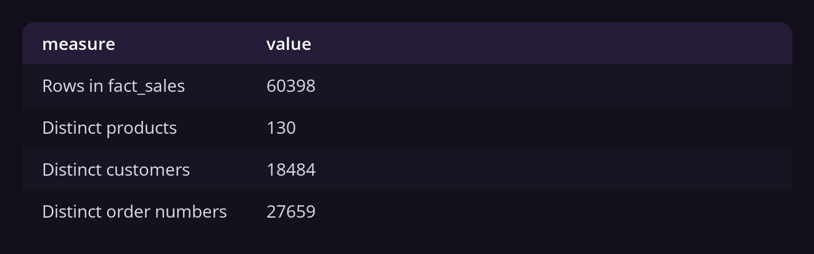
A row is an order line, not an order: 60,398 lines across 27,659 orders, or 2.2 lines each. So any count of orders has to say DISTINCT, and a report that forgets it doubles the size of the business.
COALESCEUNION ALLLEFT JOINGROUP BYHAVING
The premise everyone assumes and nobody tests: the fields are populated and the keys join. Three checks settle it, and they cost less than one wrong report.
Seven checks, one result
SELECT 'Missing order date' AS check_name, COUNT(*) AS failing_rows
FROM gold.fact_sales WHERE order_date IS NULL
UNION ALL SELECT 'Zero or negative sales', COUNT(*)
FROM gold.fact_sales WHERE COALESCE(sales_amount, 0) <= 0
UNION ALL SELECT 'Ship date before order date', COUNT(*)
FROM gold.fact_sales WHERE shipping_date < order_date
UNION ALL SELECT 'Product with no cost', COUNT(*)
FROM gold.dim_products WHERE COALESCE(cost, 0) = 0
UNION ALL SELECT 'Product with no category', COUNT(*)
FROM gold.dim_products WHERE category IS NULL
UNION ALL SELECT 'Sale with no matching product', COUNT(*)
FROM gold.fact_sales f LEFT JOIN gold.dim_products p ON p.product_key = f.product_key
WHERE p.product_key IS NULL
UNION ALL SELECT 'Sale with no matching customer', COUNT(*)
FROM gold.fact_sales f LEFT JOIN gold.dim_customers c ON c.customer_key = f.customer_key
WHERE c.customer_key IS NULL;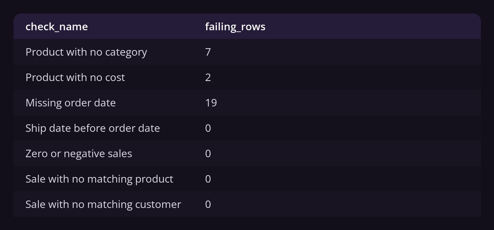
The keys are clean, so every join below is safe. Three defects surface: 19 order lines with no date, which have to be excluded from anything time based, plus 2 products with no cost and 7 with no category, which will fall out of any grouped total.
Does the catalogue match what sells?
SELECT
COALESCE(p.category, '(no category)') AS category,
COUNT(DISTINCT p.product_key) AS products_listed,
COUNT(DISTINCT f.product_key) AS products_sold
FROM gold.dim_products p
LEFT JOIN gold.fact_sales f ON f.product_key = p.product_key
GROUP BY COALESCE(p.category, '(no category)')
HAVING COUNT(DISTINCT p.product_key) > COUNT(DISTINCT f.product_key)
ORDER BY products_listed DESC;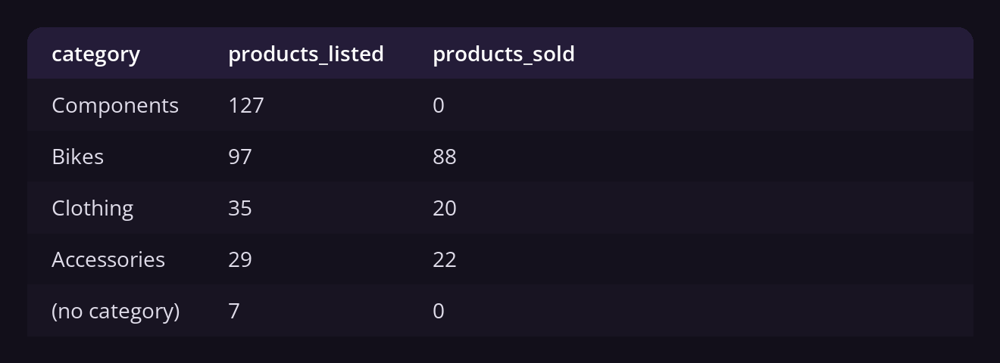
Half true. The keys hold, so every join below is safe. The fields do not: 19 order lines carry no date, 7 products no category, 2 no cost, and Components lists 127 products that have never sold once. The dateless rows leave any time analysis, and the dead stock becomes a question of its own.
SUMCOUNTAVGMIN, MAXUNION ALL
How large is the business, and is any single field spread wide enough to make its average useless? UNION ALL stacks the totals into one result, and a grouped MIN and MAX expose the spread.
The baseline
SELECT 'Total Sales' AS measure_name, SUM(sales_amount) AS measure_value FROM gold.fact_sales
UNION ALL SELECT 'Total Quantity', SUM(quantity) FROM gold.fact_sales
UNION ALL SELECT 'Total Orders', COUNT(DISTINCT order_number) FROM gold.fact_sales
UNION ALL SELECT 'Average Order Value', ROUND(SUM(sales_amount)::numeric / COUNT(DISTINCT order_number), 0) FROM gold.fact_sales
UNION ALL SELECT 'Total Products', COUNT(product_key) FROM gold.dim_products
UNION ALL SELECT 'Total Customers', COUNT(customer_key) FROM gold.dim_customers;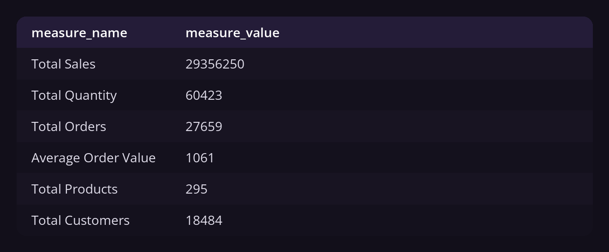
$29.36M across 27,659 orders puts the average order at $1,061. Every later result gets checked against it. A slice implying $300 or $4,000 is a broken slice, not a finding.
How wide is the price range?
SELECT
COALESCE(category, '(no category)') AS category,
COUNT(*) AS products,
MIN(cost) AS cheapest,
MAX(cost) AS most_expensive,
ROUND(AVG(cost), 2) AS average_cost
FROM gold.dim_products
GROUP BY COALESCE(category, '(no category)')
ORDER BY average_cost DESC;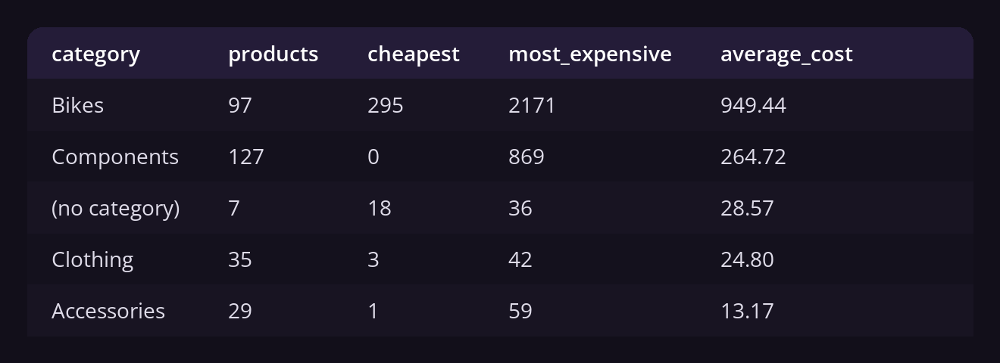
$29.36M over 27,659 orders sets the reference at $1,061 an order. And cost runs from $1 to $2,171, with Bikes averaging $949 against $13 for Accessories. A catalogue-wide average is meaningless at that spread, so from here on every average is taken inside a category.
JOINGROUP BYORDER BYCTE (WITH)Window functions
The intuitive premise: a category with more products should bring in more money. One JOIN puts the catalogue beside the revenue, and a window function puts the part and the whole on the same row.
Catalogue size against revenue
SELECT
COALESCE(p.category, '(no category)') AS category,
COUNT(DISTINCT p.product_key) AS products,
COALESCE(SUM(f.sales_amount), 0) AS total_revenue
FROM gold.dim_products p
LEFT JOIN gold.fact_sales f ON f.product_key = p.product_key
GROUP BY COALESCE(p.category, '(no category)')
ORDER BY total_revenue DESC;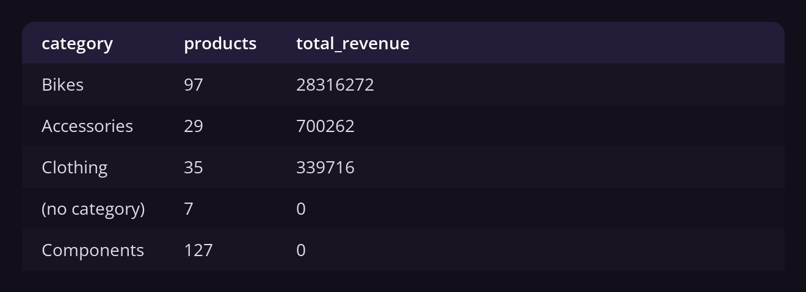
How much of the whole is that?
WITH category_sales AS (
SELECT
p.category,
SUM(f.sales_amount) AS total_sales
FROM gold.fact_sales f
LEFT JOIN gold.dim_products p ON p.product_key = f.product_key
GROUP BY p.category
)
SELECT
category,
total_sales,
ROUND(total_sales::numeric / SUM(total_sales) OVER () * 100, 2) AS pct_of_total
FROM category_sales
ORDER BY total_sales DESC;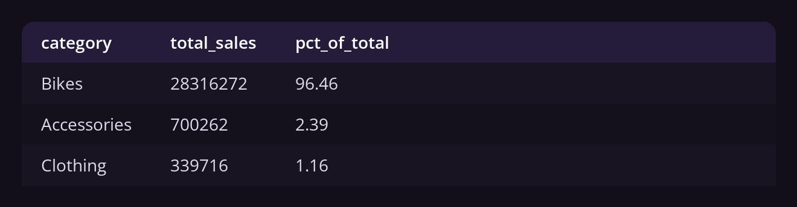
The premise fails. 97 bike products carry 96.46% of the revenue while 191 products everywhere else split 3.54%. Catalogue size predicts nothing here, and the real finding is the concentration: one weak quarter for Bikes is a weak quarter for the company.
Date functionsLAGNULLIFCTE (WITH)
Is the business growing, and is the movement steady enough to plan against? DATE_TRUNC turns a raw order date into a reporting year, and LAG puts last year on the same row as this one.
The yearly trend
SELECT
DATE_TRUNC('year', order_date)::date AS order_year,
SUM(sales_amount) AS total_sales,
COUNT(DISTINCT customer_key) AS active_customers
FROM gold.fact_sales
WHERE order_date IS NOT NULL
GROUP BY DATE_TRUNC('year', order_date)
ORDER BY order_year;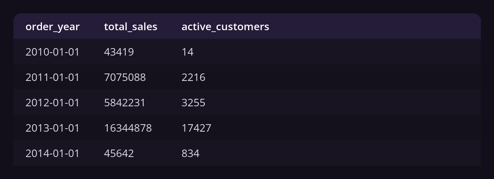
How much did each year move?
WITH yearly AS (
SELECT
EXTRACT(YEAR FROM order_date)::int AS order_year,
SUM(sales_amount) AS total_sales
FROM gold.fact_sales
WHERE order_date IS NOT NULL
GROUP BY EXTRACT(YEAR FROM order_date)
)
SELECT
order_year,
total_sales,
LAG(total_sales) OVER (ORDER BY order_year) AS previous_year,
ROUND(
(total_sales - LAG(total_sales) OVER (ORDER BY order_year))::numeric
/ NULLIF(LAG(total_sales) OVER (ORDER BY order_year), 0) * 100, 1
) AS pct_change
FROM yearly
ORDER BY order_year;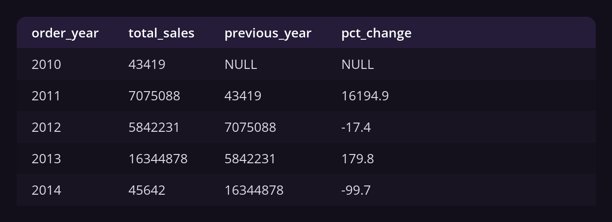
Growing, but not steadily. Sales fell 17.4% in 2012 and rose 179.8% in 2013, and the figures at both ends are artefacts of partial years. A single triple-digit jump between a fall and a stub is an event, not a trend, and it stays out of any forecast until somebody names what caused it.
ORDER BYLIMITCASE WHENCTE (WITH)Subqueries
Does the revenue rest on a handful of large accounts, and how mature is the customer base? Ranking answers the first, and CASE turns spend and tenure into the labels a marketing team already uses.
Who are the largest customers?
SELECT
c.customer_key,
c.first_name,
c.last_name,
SUM(f.sales_amount) AS total_revenue
FROM gold.fact_sales f
LEFT JOIN gold.dim_customers c ON c.customer_key = f.customer_key
GROUP BY c.customer_key, c.first_name, c.last_name
ORDER BY total_revenue DESC
LIMIT 10;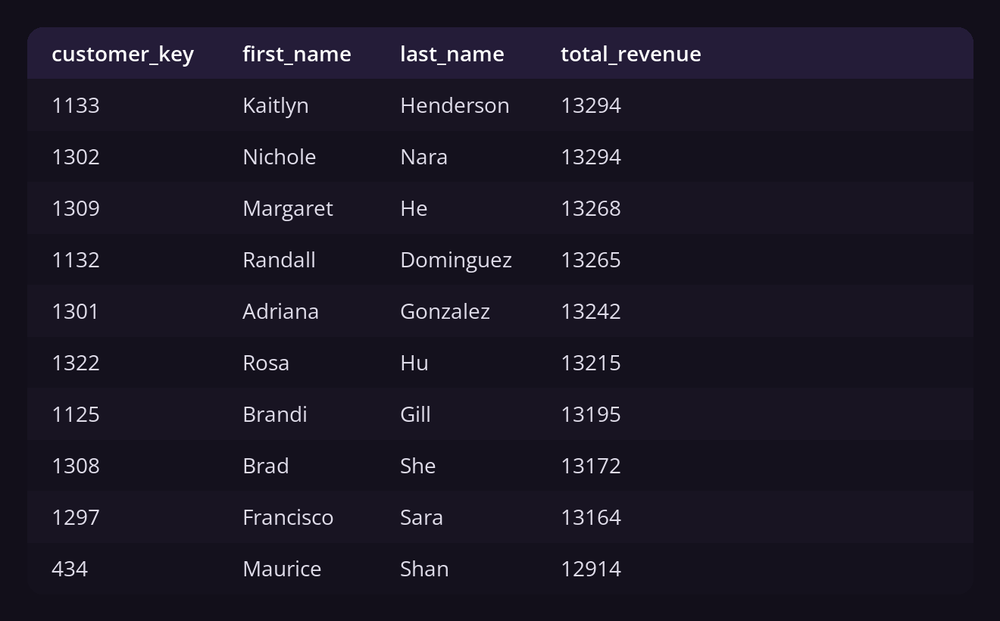
What does the base look like?
WITH customer_spending AS (
SELECT
customer_key,
SUM(sales_amount) AS total_spending,
(EXTRACT(YEAR FROM MAX(order_date)) - EXTRACT(YEAR FROM MIN(order_date))) * 12
+ (EXTRACT(MONTH FROM MAX(order_date)) - EXTRACT(MONTH FROM MIN(order_date))) AS lifespan
FROM gold.fact_sales
WHERE order_date IS NOT NULL
GROUP BY customer_key
)
SELECT
CASE
WHEN lifespan >= 12 AND total_spending > 5000 THEN 'VIP'
WHEN lifespan >= 12 AND total_spending <= 5000 THEN 'Regular'
ELSE 'New'
END AS customer_segment,
COUNT(*) AS total_customers,
ROUND(AVG(total_spending), 2) AS avg_spend
FROM customer_spending
GROUP BY customer_segment
ORDER BY total_customers DESC;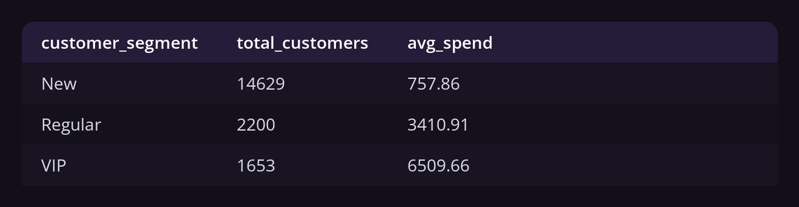
No account is load-bearing: the top ten each spend near $13,000 and the gap between first and tenth is small, so retention needs a programme rather than ten phone calls. The base is young, though, with 79% under twelve months old, and this data cannot tell strong acquisition from weak retention. That is the question the next project opens with.
Seventeen commands, six steps, and the exploration ends where it should: with better questions. Revenue sits in one category, 134 products have never sold, no customer is load-bearing, and four out of five customers are too new to judge. Each of those is a reason to run the next analysis.
What the fundamentals cannot settle is whether 2013 was durable and whether the new customers stay. Both need cohort logic and heavier window work, and that is the follow-up project. It starts exactly where this one stops.